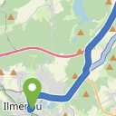
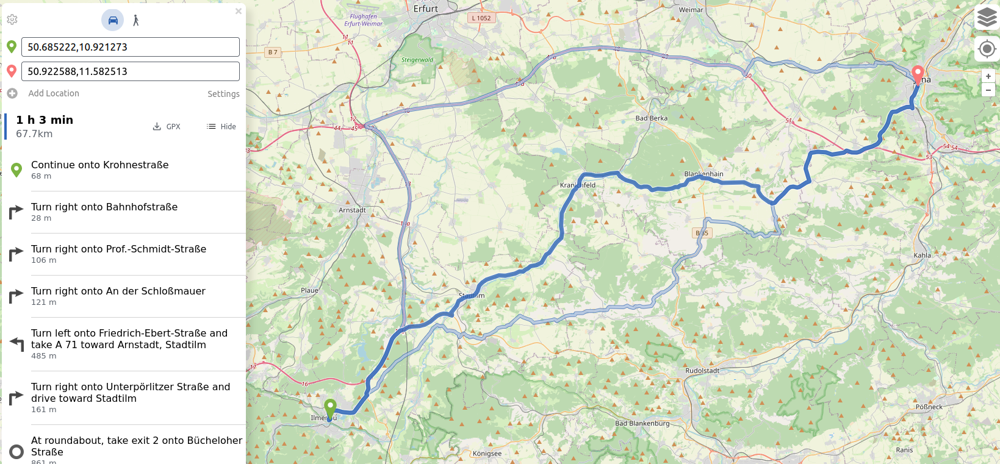

OpenStreetMap Navi als Docker-Container

Ich habe die auf OpenStreetMap basierende OpenSource Navigationslösung Graphhopper in einen Docker-Container gepackt und als neuestes Mitglied in meinem Docker-Zoo willkommen geheißen.
Da es leider keine offiziellen Images mehr dafür gibt (es scheint sie früher gegeben zu haben, da sich immer noch tote Links dafür finden lassen), habe ich selber Hand angelegt. Herausgekommen sind ein Dockerfile und eine docker-compose.yml, die für eigene Zwecke ein wenig angepasst werden können. Dieses Setup benötigt zwei Volumes - eines mit der zu benutzenden .pbf Datei, die man zum Beispiel von der GeoFabrik beziehen kann und eine Konfiguration, in der zum Beispiel die verschiedenen Profile gepflegt werden. Eines für zwei Profile (Auto und zu Fuß) habe ich ebenfalls unten angehängt. Zur Illustration bin ich hier einfach mal von Ilmenau nach Jena gefahren:

Routenplanung für eine Fahrt von Ilmenau nach Jena mit drei AlternativvorschlägenDockerfile
#Build stage
FROM openjdk:23-bookworm
RUN apt-get update && apt-get install wget
ENV HOME=/graphhopper
RUN mkdir -p $HOME
WORKDIR $HOME
RUN wget https://repo1.maven.org/maven2/com/graphhopper/graphhopper-web/9.1/graphhopper-web-9.1.jar
#ADD pom.xml $HOME
#RUN mvn -U verify --fail-never
#ADD . $HOME
#RUN mvn compile package assembly:single
# Run it
#FROM openjdk:17
#COPY --from=build-env /plantuml-roughifier/target/*-jar-with-dependencies.jar /app/plantuml-roughifier.jar
EXPOSE 8989
CMD ["java", "-jar", "-Ddw.graphhopper.datareader.file=/graphhopper/data-latest.osm.pbf", "-jar", "graphhopper-web-9.1.jar", "server", "config.yml"]
docker-compose.yml (mit Traefikv2 Vorbereitung)
version: '3.1'
services:
graphhopper:
build:
context: ./ # Local
dockerfile: Dockerfile
container_name: graphhopper
hostname: graphhopper
ports:
- 8989:8989
restart: unless-stopped
volumes:
- ./config-example.yml:/graphhopper/config.yml
- ./thueringen-latest.osm.pbf:/graphhopper/data-latest.osm.pbf
labels:
- "traefik.enable=true"
- "traefik.http.routers.graphhopper-http.entrypoints=http"
- "traefik.http.routers.graphhopper-http.rule=Host(`graphhopper.docker.lab`)"
# - "traefik.http.routers.graphhopper-http.middlewares=graphhopper-https"
- "traefik.http.services.graphhopper-http.loadbalancer.server.port=8989"
- "traefik.http.middlewares.graphhopper-https.redirectscheme.scheme=https"
- "traefik.http.routers.graphhopper.entrypoints=https"
- "traefik.http.routers.graphhopper.rule=Host(`graphhopper.docker.lab`)"
- "traefik.http.routers.graphhopper.tls=true"
- "traefik.docker.network=traefik_proxy"
networks:
- traefik_proxy
networks:
traefik_proxy:
external:
name: traefik_proxy
config.yml
graphhopper:
# OpenStreetMap input file PBF or XML, can be changed via command line -Ddw.graphhopper.datareader.file=some.pbf
datareader.file: ""
# Local folder used by graphhopper to store its data
graph.location: graph-cache
# Routing can be done only for profiles listed below. For more information about profiles and custom profiles have a
# look into the documentation at docs/core/profiles.md or the examples under web/src/test/java/com/graphhopper/application/resources/
# or the CustomWeighting class for the raw details.
#
# In general a profile consists of the following
# - name (required): a unique string identifier for the profile
# - weighting (optional): by default 'custom'
# - turn_costs (optional):
# vehicle_types: [motorcar, motor_vehicle] (vehicle types used for vehicle-specific turn restrictions)
# u_turn_costs: 60 (time-penalty for doing a u-turn in seconds)
#
# Depending on the above fields there are other properties that can be used, e.g.
# - custom_model_files: when you specified "weighting: custom" you need to set one or more json files which are searched in
# custom_models.directory or the working directory that defines the custom_model. If you want an empty model you can
# set "custom_model_files: []
# You can also use the `custom_model` field instead and specify your custom model in the profile directly.
#
# To prevent long running routing queries you should usually enable either speed or hybrid mode for all the given
# profiles (see below). Or at least limit the number of `routing.max_visited_nodes`.
profiles:
- name: car
# turn_costs:
# vehicle_types: [motorcar, motor_vehicle]
# u_turn_costs: 60
custom_model_files: [car.json]
- name: foot
custom_model_files: [foot.json, foot_elevation.json]
# - name: bike
# custom_model_files: [bike.json, bike_elevation.json]
#
# - name: racingbike
# custom_model_files: [racingbike.json, bike_elevation.json]
#
# - name: mtb
# custom_model_files: [mtb.json, bike_elevation.json]
# instead of the inbuilt custom models (see ./core/src/main/resources/com/graphhopper/custom_models)
# you can specify a folder where to find your own custom model files
# custom_models.directory: custom_models
# Speed mode:
# It's possible to speed up routing by doing a special graph preparation (Contraction Hierarchies, CH). This requires
# more RAM/disk space for holding the prepared graph but also means less memory usage per request. Using the following
# list you can define for which of the above routing profiles such preparation shall be performed. Note that to support
# profiles with `turn_costs: true` a more elaborate preparation is required (longer preparation time and more memory
# usage) and the routing will also be slower than with `turn_costs: false`.
profiles_ch:
- profile: car
- profile: foot
# Hybrid mode:
# Similar to speed mode, the hybrid mode (Landmarks, LM) also speeds up routing by doing calculating auxiliary data
# in advance. Its not as fast as speed mode, but more flexible.
#
# Advanced usage: It is possible to use the same preparation for multiple profiles which saves memory and preparation
# time. To do this use e.g. `preparation_profile: my_other_profile` where `my_other_profile` is the name of another
# profile for which an LM profile exists. Important: This only will give correct routing results if the weights
# calculated for the profile are equal or larger (for every edge) than those calculated for the profile that was used
# for the preparation (`my_other_profile`)
profiles_lm: []
# Add additional information to every edge. Used for path details (#1548) and custom models (docs/core/custom-models.md)
# Default values are: road_class,road_class_link,road_environment,max_speed,road_access
# More are: surface,smoothness,max_width,max_height,max_weight,max_weight_except,hgv,max_axle_load,max_length,
# hazmat,hazmat_tunnel,hazmat_water,lanes,osm_way_id,toll,track_type,mtb_rating,hike_rating,horse_rating,
# country,curvature,average_slope,max_slope,car_temporal_access,bike_temporal_access,foot_temporal_access
graph.encoded_values: car_access, car_average_speed, foot_access, hike_rating, foot_priority, foot_average_speed, average_slope
# To make CH preparation faster for multiple profiles you can increase the default threads if you have enough RAM.
# Change this setting only if you know what you are doing and if the default worked for you.
# prepare.ch.threads: 1
# To tune the performance vs. memory usage for the hybrid mode use
# prepare.lm.landmarks: 16
# Make landmark preparation parallel if you have enough RAM. Change this only if you know what you are doing and if
# the default worked for you.
# prepare.lm.threads: 1
# To populate your graph with elevation data use SRTM, default is noop (no elevation). Read more about it in docs/core/elevation.md
# graph.elevation.provider: srtm
# default location for cache is /tmp/srtm
# graph.elevation.cache_dir: ./srtmprovider/
# If you have a slow disk or plenty of RAM change the default MMAP to:
# graph.elevation.dataaccess: RAM_STORE
# To enable bilinear interpolation when sampling elevation at points (default uses nearest neighbor):
# graph.elevation.interpolate: bilinear
# Reduce ascend/descend per edge without changing the maximum slope:
# graph.elevation.edge_smoothing: ramer
# removes elevation fluctuations up to max_elevation (in meter) and replaces the elevation with a value based on the average slope
# graph.elevation.edge_smoothing.ramer.max_elevation: 5
# Using an averaging approach for smoothing will reveal values not affected by outliers and realistic slopes and total altitude values (up and down)
# graph.elevation.edge_smoothing: moving_average
# window size in meter along a way used for averaging a node's elevation
# graph.elevation.edge_smoothing.moving_average.window_size: 150
# To increase elevation profile resolution, use the following two parameters to tune the extra resolution you need
# against the additional storage space used for edge geometries. You should enable bilinear interpolation when using
# these features (see #1953 for details).
# - first, set the distance (in meters) at which elevation samples should be taken on long edges
# graph.elevation.long_edge_sampling_distance: 60
# - second, set the elevation tolerance (in meters) to use when simplifying polylines since the default ignores
# elevation and will remove the extra points that long edge sampling added
# graph.elevation.way_point_max_distance: 10
# This features sets a maximum speed in 'max_speed' encoded value if no maxspeed tag was found. It is country-dependent
# and based on several rules. See https://github.com/westnordost/osm-legal-default-speeds
# To use it uncomment the following, then enable urban density below and add 'country' to graph.encoded_values
# max_speed_calculator.enabled: true
# This feature allows classifying roads into 'rural', 'residential' and 'city' areas (encoded value 'urban_density')
# Use 1 or more threads to enable the feature
# graph.urban_density.threads: 8
# Use higher/lower sensitivities if too little/many roads fall into the according categories.
# Using smaller radii will speed up the classification, but only change these values if you know what you are doing.
# If you do not need the (rather slow) city classification set city_radius to zero.
# graph.urban_density.residential_radius: 400
# graph.urban_density.residential_sensitivity: 6000
# graph.urban_density.city_radius: 1500
# graph.urban_density.city_sensitivity: 1000
# In many cases the road network consists of independent components without any routes going in between. In
# the most simple case you can imagine an island without a bridge or ferry connection. The following parameter
# allows setting a minimum size (number of edges) for such detached components. This can be used to reduce the number
# of cases where a connection between locations might not be found.
prepare.min_network_size: 200
prepare.subnetworks.threads: 1
# You can define the maximum visited nodes when routing. This may result in not found connections if there is no
# connection between two points within the given visited nodes. The default is Integer.MAX_VALUE. Useful for flexibility mode
# routing.max_visited_nodes: 1000000
# The maximum time in milliseconds after which a routing request will be aborted. This has some routing algorithm
# specific caveats, but generally it should allow the prevention of long-running requests. The default is Long.MAX_VALUE
# routing.timeout_ms: 300000
# Control how many active landmarks are picked per default, this can improve query performance
# routing.lm.active_landmarks: 4
# You can limit the max distance between two consecutive waypoints of flexible routing requests to be less or equal
# the given distance in meter. Default is set to 1000km.
routing.non_ch.max_waypoint_distance: 1000000
# Excludes certain types of highways during the OSM import to speed up the process and reduce the size of the graph.
# A typical application is excluding 'footway','cycleway','path' and maybe 'pedestrian' and 'track' highways for
# motorized vehicles. This leads to a smaller and less dense graph, because there are fewer ways (obviously),
# but also because there are fewer crossings between highways (=junctions).
# Another typical example is excluding 'motorway', 'trunk' and maybe 'primary' highways for bicycle or pedestrian routing.
import.osm.ignored_highways: cycleway # typically useful for motorized-only routing
#import.osm.ignored_highways: footway,cycleway,path,pedestrian,steps # typically useful for motorized-only routing
# import.osm.ignored_highways: motorway,trunk # typically useful for non-motorized routing
# configure the memory access, use RAM_STORE for well equipped servers (default and recommended)
graph.dataaccess.default_type: RAM_STORE
# will write way names in the preferred language (language code as defined in ISO 639-1 or ISO 639-2):
# datareader.preferred_language: en
# GraphHopper reads GeoJSON polygon files including their properties from this directory and makes them available
# to all tag parsers and custom models. All GeoJSON Features require to have the "id" property.
# Country borders are included automatically (see countries.geojson).
# custom_areas.directory: path/to/custom_areas
# GraphHopper applies country-specific routing rules during import (not enabled by default).
# You need to redo the import for changes to take effect.
# country_rules.enabled: true
# Dropwizard server configuration
server:
application_connectors:
- type: http
port: 8989
# for security reasons bind to localhost
bind_host: 0.0.0.0
# increase GET request limit - not necessary if /maps UI is not used or used without custom models
max_request_header_size: 50k
request_log:
appenders: []
admin_connectors:
- type: http
port: 8990
bind_host: localhost
# See https://www.dropwizard.io/en/latest/manual/core.html#logging
logging:
appenders:
- type: file
time_zone: UTC
current_log_filename: logs/graphhopper.log
log_format: "%d{yyyy-MM-dd HH:mm:ss.SSS} [%thread] %-5level %logger{36} - %msg%n"
archive: true
archived_log_filename_pattern: ./logs/graphhopper-%d.log.gz
archived_file_count: 30
never_block: true
- type: console
time_zone: UTC
log_format: "%d{yyyy-MM-dd HH:mm:ss.SSS} [%thread] %-5level %logger{36} - %msg%n"
loggers:
"com.graphhopper.osm_warnings":
level: DEBUG
additive: false
appenders:
- type: file
currentLogFilename: logs/osm_warnings.log
archive: false
logFormat: '[%level] %msg%n'
Artikel, die hierher verlinken
Isochrone Karten mittels Graphhopper
28.07.2024
Ich sah neulich auf Mastodon einen Tröt, der nach einer möglichst kostenlosen Möglichkeit fragte, isochrone Karten für beliebige Locations herzustellen.


Vor 5 Jahren hier im Blog
-
Streaming Server mit Linux
17.08.2019
Ich habe schon länger darüber nachgedacht, einmal zu versuchen, einen Streaming-Server aufzubauen. Da es in letzter Zeit wieder einmal sehr war draußen ist, habe ich die Zeit, die ich vor der Hitze Schutz suchte dazu genutzt, diese Idee in die Praxis umzusetzen...
Weiterlesen...
Tags
Android Basteln C und C++ Chaos Datenbanken Docker dWb+ ESP Wifi Garten Geo Git(lab|hub) Go GUI Gui Hardware Java Jupyter Komponenten Links Linux Markdown Markup Music Numerik PKI-X.509-CA Python QBrowser Rants Raspi Revisited Security Software-Test sQLshell TeleGrafana Verschiedenes Video Virtualisierung Windows Upcoming...
Neueste Artikel
- Futro s920 Booten übers Netz
Ich habe hier bereits von den Anfängen meiner Versuche berichtet, Ersatz für die Raspis und vergleichbarer Hardware zu finden.
Weiterlesen... - LinkCollections 2024 VI
Nach der letzten losen Zusammenstellung (für mich) interessanter Links aus den Tiefen des Internet von 2024 folgt hier gleich die nächste:
Weiterlesen... -
 Online Werkzeuge
Online Werkzeuge
Eine Liste interessanter Werkzeuge zur Benutzung "on the road"...
Weiterlesen...
Manche nennen es Blog, manche Web-Seite - ich schreibe hier hin und wieder über meine Erlebnisse, Rückschläge und Erleuchtungen bei meinen Hobbies.
Wer daran teilhaben und eventuell sogar davon profitieren möchte, muß damit leben, daß ich hin und wieder kleine Ausflüge in Bereiche mache, die nichts mit IT, Administration oder Softwareentwicklung zu tun haben.
Ich wünsche allen Lesern viel Spaß und hin und wieder einen kleinen AHA!-Effekt...
PS: Meine öffentlichen GitHub-Repositories findet man hier - meine öffentlichen GitLab-Repositories finden sich dagegen hier.